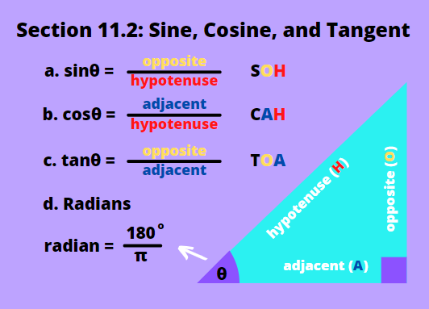
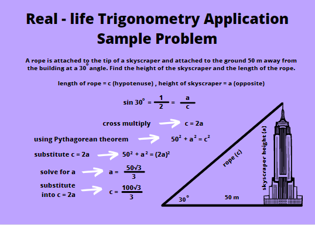
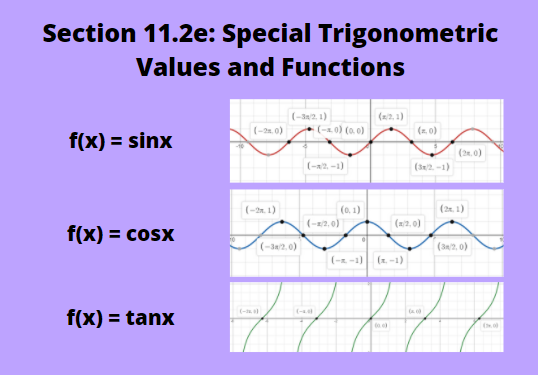

Trigonometry deals with angles and sides of triangles, mainly using ratios and formulas to 'connect' them together. This branch of math is commonly present in physics, used to count vectors, kinematics, and many other topics related to motion and vector quantities. Three main ratios of trigonometry are sine (sin for short), cosine (cos for short), and tangent (tan for short). In this chapter, we are going to understand the basics and explore it further as the chapter progresses.
We'll refer to the triangle provided on the picture on the right for the following discussions. The sides are labelled accordingly. θ (theta) refers to the angle used, it serves like 'x' to represent unknown values, but θ represents unknown angles.
a. Sine
To find sin θ, you need to divide the side in front of the angle (i.e. opposite side) by the hypotenuse (the longest, slanting side). Using this principle we have sinθ = opposite/hypotenuse.
b. Cosine
To find cosine θ, we'll divide the side adjacent to the angle (the one beside it, but not the hypotenuse) by the hypotenuse. With this we have cosθ = adjacent/hypotenuse.
c. Tangent
To find tangent θ, the opposite side is divided by the adjacent side. This gives us tanθ = opposite/adjacent. On the image on the right, there's a real life example of using trigonometry to measure buildings from certain angles.
d. Radians
Radian is the SI unit of angles, and its formula is radian = 180o/π, and πradian = 180o. When you see the notation π/6, it means to say 30o, because 180o x π/6 = 30o. Similarly, if you see sin(π/6), it means sin 30o.
e. Special Trigonometric Values and Functions
 The quick way to memorize the given formulas is the abbreviation SOH - CAH - TOA, which stands for sin opposite/hypotenuse - cos adjacent/hypotenuse - tan opposite/adjacent. There are also special angles that are often used in trigonometry - related questions. They are called special trigonomtric values, and they are listed on the table below:
| Special Trigonometric Values | |||||||
|---|---|---|---|---|---|---|---|
| Angle/Radian | 0o | 30o(π/6) | 45o(π/4) | 60o(π/3) | 90o(π/2) | 180o(π) | 360o(2π) |
| sinθ | 0 | 1/2 | √2/2 | √3/2 | 1 | 0 | 0 |
| cosθ | 1 | √3/2 | √2/2 | 1/2 | 0 | -1 | 1 |
| tanθ | 0 | √3/3 | 1 | √3 | - | 0 | 0 |
These values shouldn't be memorized, but if you keep practicing by using them in questions, you should automatically remember them (so don't burden yourself with memorizing all these numbers).
When you plot these values on a graph, you can obtain the functions of f(x) = sinx, f(x) = cosx, and f(x) = tanx. The graphs are shown on the image above.
a. sin2θ + cos2θ = 1
This form has a similar format with what we know as the Pythagorean Theorem a2 + b2 = c2. To explore how we get the identity sin2θ + cos2θ = 1, we can expand them into the formulas we learned in Section 11.2. We also know that the triangle can hold the Pythagorean Theorem, we have adjacent2 + opposite2 = hypotenuse 2. Dividing all the terms with hypotenuse 2, we have (opposite/hypotenuse)2 + (adjacent/hypotenuse)2 = (hypotenuse/hypotenuse)2. We have the formulas sinθ = opposite/hypotenuse, cosθ = adjacent/hypotenuse, tanθ = opposite/adjacent, and (hypotenuse/hypotenuse)2 = 1. Substituting the trigonometric values we have sin2θ + cos2θ = 1.
b. tanθ = sinθ/cosθ
For this identity, we have tanθ = opposite/adjacent. We can multiply (1/hypotenuse)/(1/hypotenuse) which is equal to 1, to the formula. It will not change the value of the formula since technically we're multiplying 1 into it. Now we have tanθ = (opposite/hypotenuse)/(adjacent/hypotenuse), and we know from the formulas in Section 11.2, that sinθ = opposite/hypotenuse, and cosθ = adjacent/hypotenuse. Substituting those values we have tanθ = sinθ/cosθ.
a. Quadrants
When angles are graphed on the Cartesian Plane, they land on one of the four quadrants. In the first quadrant (0 < θ < 90o), all of the angle's sin, cos, and tan values are positive because both x and y values in the first quadrant are positive. In the second quadrant (90o < θ < 180o), only the angle's sin values remain positive, its cos and tan values become negative because the x - values in the second quadrant become negative. In the third quadrant (180o < θ < 270o), only the tan value of the angle remains positive (because both opposite and adjacent are negative, when they divide, tan becomes positive), while its sin and cos values become negative because both x and y - values in the third quadrant are engative. In the fourth quadrant (270o < θ < 360o), the angle's cos value remains positive, while the sin and tan values become negative because in the fourth quadrant, the y - values become negative.
In short:
1. If the x - value is negative (quadrants 2 & 3), cosθ is negative.
2. If the y - value is negative (quadrants 3 & 4), sinθ is negative.
3. All sin, cos, and tan values are positive in the first quadrant.
4. tanθ is negative in quadrants 2 & 4, but not in quadrant 3 because both the opposite and adjacent sides are negative, and the negative signs cancel out.
b. Transformations
Below is a table of transformation of trigonometric functions. When the certain angles are added, the value of that trigonometric expression changes automatically. Using what we learned about quadrants earlier, we can aply our knowledge in trnasforming trigonometric expressions.
| Trigonometric Transformations | |||
|---|---|---|---|
| Transformation | 180o - θ | 180o + θ | 360o - θ |
| sin | sinθ | -sinθ | -sinθ |
| cos | -cosθ | -cosθ | cosθ |
| tan | -tanθ | tanθ | -tanθ |
a. Adding and Subtracting Sines
Let's say we have two diferent angle measurements, A and B. Two formulas we can use to add or subtract two sine values are sinA + sinB = 2sin[(A+B)/2] x cos [(A - B)/2] and sinA - sinB = 2cos[(A+B)/2] x sin [(A - B)/2].
b. Adding and Subtracting Cosines
Similar with adding and subtracting sines, we'll still use the angle measurements A and B. We have the formulas cosA + cosB = 2cos[(A+B)/2] x cos [(A - B)/2] and cosA - cosB = -2sin[(A+B)/2] x sin [(A - B)/2].